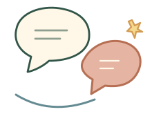

Diófa Műhely · Sajbán-Frőhner Alexandra
Quand les mots manquent et que la liste des choses à faire s’allonge.
Je crée des cartes de discussion, des journaux, des agendas et des histoires pour les enfants et les adultes. Pour ces moments où il est difficile de dire ce qui fait mal, de commencer une tâche ou de trouver un peu de temps pour soi.
Je ne cherche pas à te dire quoi faire. Parfois, une question, une page blanche ou une histoire suffit pour commencer.

For Every Path · Comment vas-tu ?
Comment vas-tu aujourd’hui ?

Six questions tirées au hasard parmi trente. Pas de bonne ou de mauvaise réponse : juste un moment pour soi.
Une réflexion pour adultes, ni test psychologique ni diagnostic. Tes réponses ne sont ni conservées ni envoyées.
Une pensée à emporter
C’est une piste de réflexion, pas une évaluation ni un diagnostic. À toi de décider de la suite.
ÇA VOUS PARLE ?
Parfois, trois pensées suffisent pour commencer.
D’une question à un livre
Une simple question peut devenir toute une histoire.

Diófa Műhely imagine des cartes de discussion, des cahiers, des journaux, des agendas, des contes et des activités créatives. Découvre ce qui pourrait te parler aujourd’hui.
Les demandes de précommande sont ouvertes par e-mail pour toutes les éditions. Les prix et la boutique suivront ; un message ne confirme pas un achat.

Sajbán-Frőhner Alexandra
Derrière les pages
Je pars de moments ordinaires : une phrase difficile à dire, un oui prononcé trop vite, un projet encore repoussé. J'en fais des questions, des pages et des histoires pour laisser à chacun la place de trouver ses propres mots.